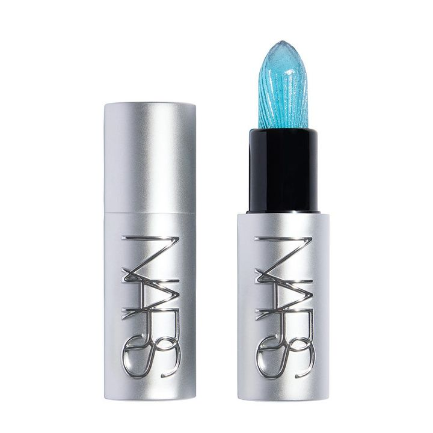
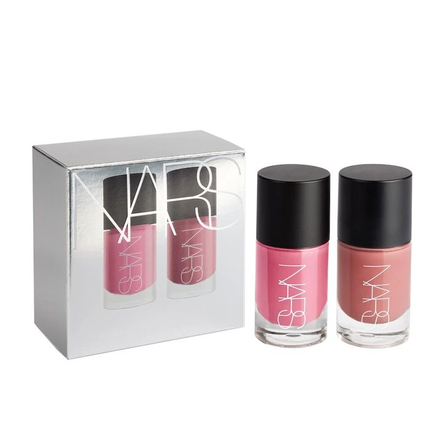
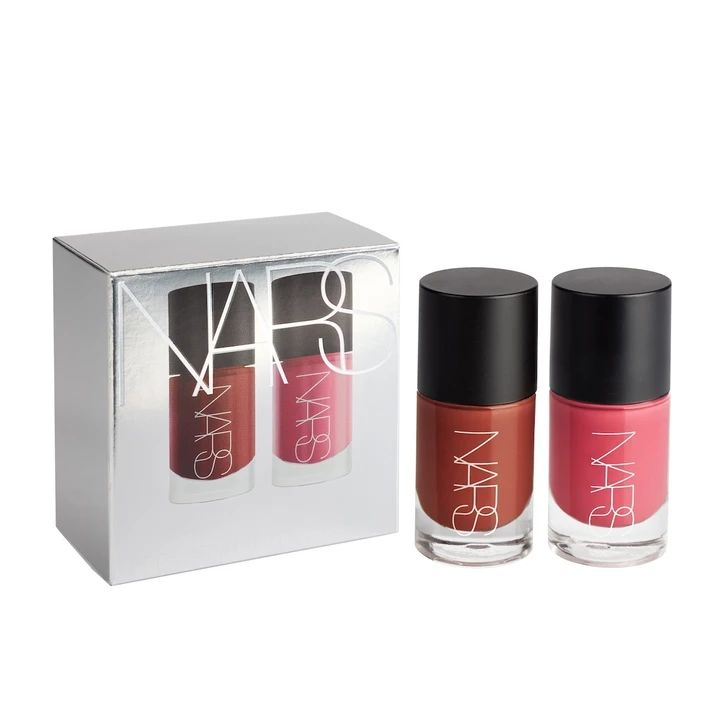
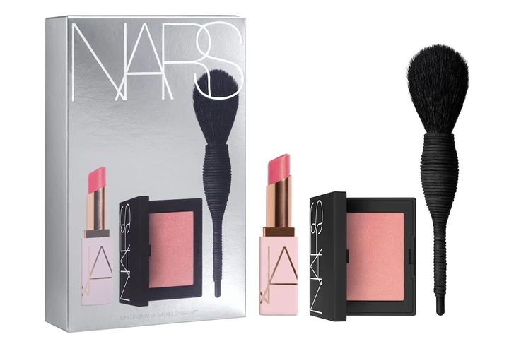
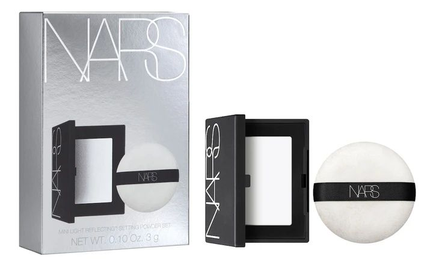

← 图文库NOVEMBER 2026 · NARS
NARS十一月，小套装更纠结
NARS这次让我纠结的，不是大盘，是这些小套装。
液体腮红双支组¥4,400；Orgasm唇颊加小刷组¥5,280；迷你定妆粉组¥4,400。想补妆方便，我会先看粉；想试颜色，再看腮红。
还有那支透明冰蓝的pH唇彩，¥5,280。外观看起来蓝，不等于上嘴也是蓝；但最后在自己唇上多粉、多深，产品图给不了答案。
媒体列11月20日发售。部分预约报道有日期差异，下面保留了核验备注，不拿一个入口的时间代替全部渠道。
迷你装你会真的用完，还是最后都留在抽屉里？
#NARS #迷你彩妆 #圣诞限定 #日本美妆
对应商品媒体产品图 · 图片来源
NARS ミニ インセイシャブル リキッドブラッシュ デュオ · 图片来源
NARS ミニ インセイシャブル リキッドブラッシュ デュオ · 图片来源
NARS ミニ オーガズム リップバーム＆チークセット · 图片来源
NARS ミニ ライトリフレクティングセッティングパウダーセット · 图片来源预约与商品信息
N18 · 极地pH唇彩（暂译）アークティック PHアジャスティング リップシーン
日本含税 ¥5,280 · 发售 2026-11-20
高岛屋TBEAUT：11/6 10:00预约
未核实
预约未开始；记录 2026-10-14核对商品／发售来源 ↗N33 · 迷你液体腮红双支组ミニ インセイシャブル リキッドブラッシュ デュオ 06055／06100
日本含税 ¥4,400 · 发售 2026-11-20
媒体多列11/6预约；个别报道出现10/9，日期冲突待官方确认。
百货列表11/6可能为预约入口时间，不能当作全国发售日。
媒体预告；预约日期存在渠道差异；记录 2026-10-19本轮保留11/20媒体发售安排；购买前需查品牌及具体渠道。
核对商品／发售来源 ↗N34 · 迷你Orgasm唇颊组ミニ オーガズム リップバーム＆チークセット
日本含税 ¥5,280 · 发售 2026-11-20
媒体多列11/6预约；个别报道出现10/9，日期冲突待官方确认。
百货列表11/6可能为预约入口时间，不能当作全国发售日。
媒体预告；预约日期存在渠道差异；记录 2026-10-19本轮保留11/20媒体发售安排；购买前需查品牌及具体渠道。
核对商品／发售来源 ↗N35 · 迷你定妆粉组ミニ ライトリフレクティングセッティングパウダーセット 02118
日本含税 ¥4,400 · 发售 2026-11-20
媒体多列11/6预约；个别报道出现10/9，日期冲突待官方确认。
百货列表11/6可能为预约入口时间，不能当作全国发售日。
媒体预告；预约日期存在渠道差异；记录 2026-10-19本轮保留11/20媒体发售安排；购买前需查品牌及具体渠道。
核对商品／发售来源 ↗